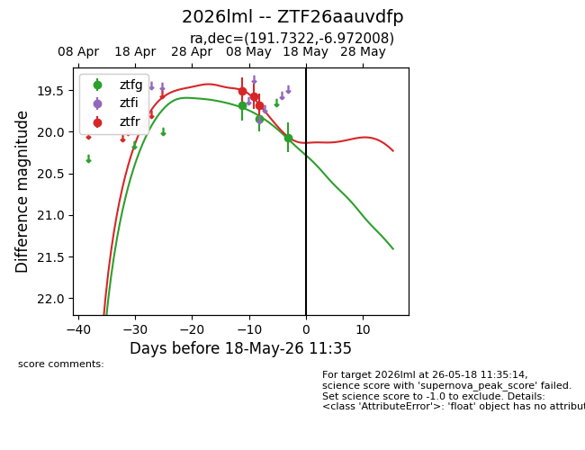
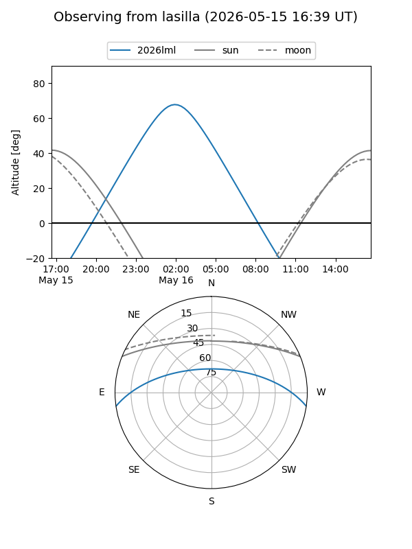
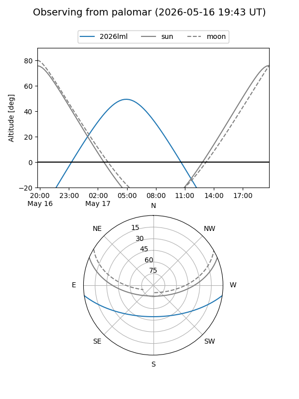
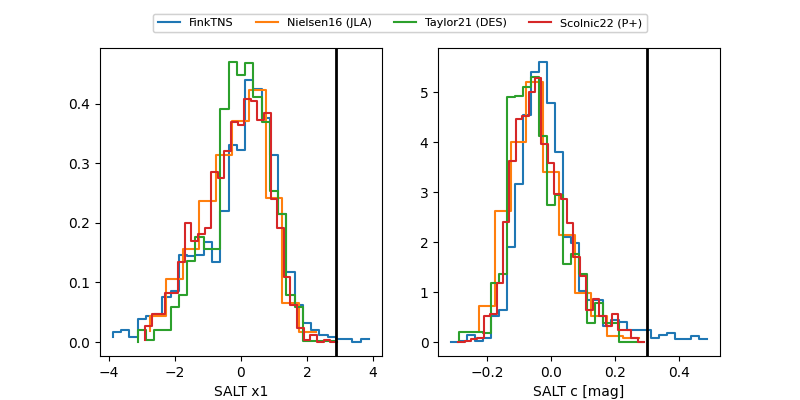

2026lml
Target 2026lml at 2026-05-18 11:37
Aliases and brokers:
FINK: link
Lasair: link
ALeRCE: link
TNS: link
YSE: link
alt names
ZTF26aauvdfp (ztf,fink_ztf)
2026lml (tns,yse)
Coordinates:
equatorial (ra, dec) = 191.7322,-6.97201
equatorial (HMS+DMS) = 12:46:55.72,-06:58:19.23
galactic (l, b) = (300.9367,+55.88227)
Flags:
Photometry:
last ztfg=20.07, ztfr=19.68
3 ztfg, 3 ztfr detections
Lightcurve

Visibility


Additional plots
